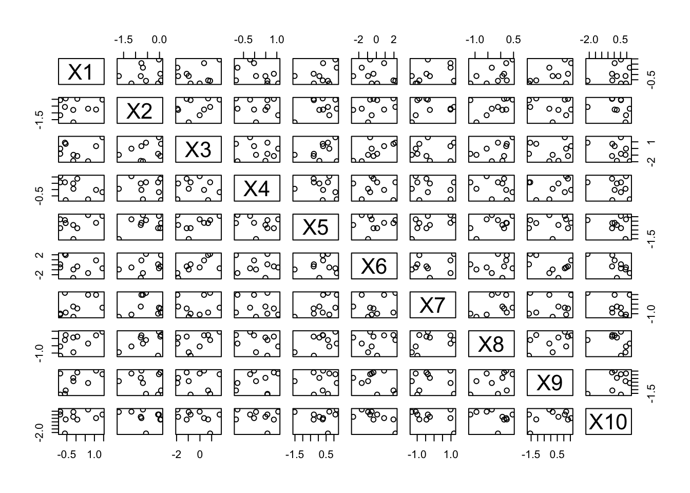
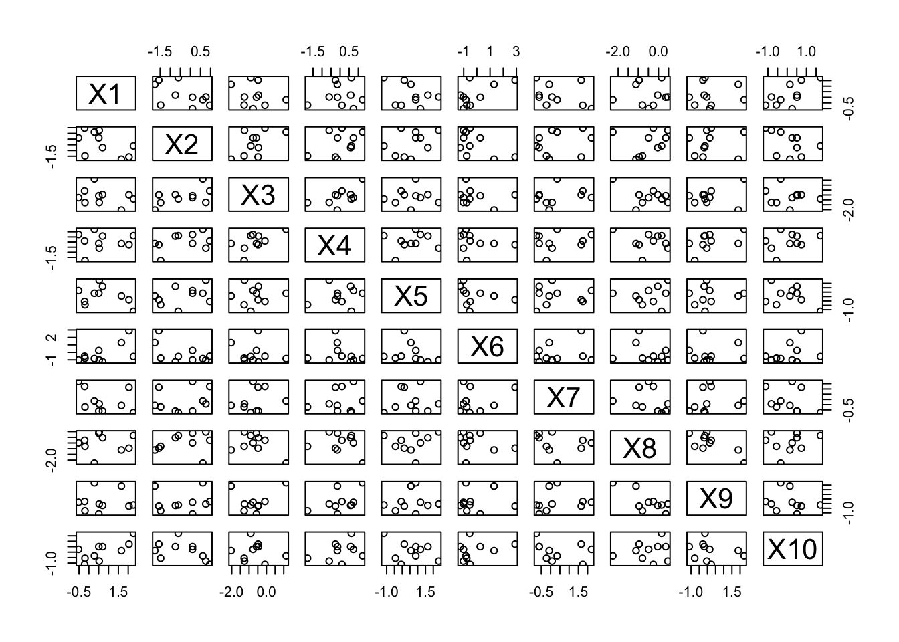

Chapter 4 An Introduction to Object-Oriented Programming
Object-Oriented Programming (OOP) is a way of thinking about how to organize programs. This way of thinking focuses on objects. We already know about objects from the last chapter, so what’s new here?
The difference is that we’re creating our own types now. In the last chapter we learned about built in types: floating point numbers, lists, arrays, functions, etc. Now we will discuss broadly how one can create his own types in both R and Python. We will not go into this too deeply, but it is important to know how how code works so that we can use it more effectively.
Here are a few abstract concepts that will help thinking about OOP. They are not mutually exclusive, and they aren’t unique to OOP, but understanding these words will help you understand the purpose of OOP. Later on, when we start looking at code examples, I will alert you to when these concepts are coming into play.
Composition refers to the idea when one type of object contains an object of another type. For example, a linear model object could hold onto estimated regression coefficients, residuals, etc.
Inheritance takes place when an object can be considered to be of multiple types. For example, an analysis of variance linear regression model might be a special case of a general linear model.
Polymorphism is the idea that the programmer can use the same code on objects of different types. For example, built-in functions in both R and Python can work on arguments of a wide variety of different types.
Encapsulation is another word for complexity hiding. Do you have to understand every line of code in a package you’re using? No, because a lot of details are hidden from you.
Modularity is an idea related to encapsulation–it means splitting something into independent pieces. How you split code into different files, different functions, different classes–all of that has to do with modularity. It promotes encapsulation, and it allows you to think about only a few lines of code at a time.
The interface, between you and the code you’re using, describes what can happen, but not how it happens. In other words, it describes some functionality so that you can decide whether you want to use it, but there are not enough details for you to make it work yourself. For example, all you have to do to be able to estimate a complicated statistical model is to look up some documentation.1 In other words, you only need to be familiar with the interface, not the implementation.
The implementation of some code you’re using describes how it works in detail. If you are a package author, you can change your code’s implementation “behind the scenes” and ideally, your end-users would never notice.
Note that this is just a quick overview that is suitable for us as aspiring data scientists and statisticians. I should should mention that there are plenty of other resources available to you, if you’d like to learn more TODO
4.1 OOP In Python
4.1.1 Overview
In Python, classes are user-defined types. When you define your own class, you describe what kind of information it holds onto, and how it behaves.
To define your own type, use the class keyword. Objects created with this class are called instances. The behave according to the rules written in the class definition–they always have data and/or functions bundled together in the same way, but these instances do not all have the same data.
To be more clear, classes may have the following two things in their definition.
Attributes are pieces of data “owned” by an instance created by the class.
(Instance) methods are functions “owned” by an instance created by the class. They can use and/or modify data belonging to the class.
4.1.2 A First Example
Here’s a simple example. Say we are interested in calculating, from numerical data \(x_1, \ldots, x_n\), a sample mean: \[ \bar{x}_n = \frac{\sum_{i=1}^n x_i}{n}. \]
In Python, we can calculate this one number very easily using np.average. However, this function requires that we pass into it all of the data. What if we don’t have all the data at any given time? In other words, suppose that the data arrive intermittently.
We might consider taking advantage of a recursive formula for the sample means.
\[ \bar{x}_n = \frac{(n-1) \bar{x}_{n-1} + x_n}{n} \]
How would we program this in Python? A first option: we might create a variable my_running_ave, and after every data point arrives, we could
my_running_ave = 1.0
my_running_ave
## 1.0
my_running_ave = ((2-1)*my_running_ave + 3.0)/2
my_running_ave
## 2.0
my_running_ave = ((3-1)*my_running_ave + 2.0)/3
my_running_ave
## 2.0There are a few problems with this. Every time we add a data point, the formula slightly changes. Every time we update the average, we have to write a different line of code. This opens up the possibility for bugs, and it makes your code less likely to be used by other people and more difficult to understand. And if we were trying to code up something more complicated than a running average? That would make matters even worse.
A second option: write a class that holds onto the running average, and that has
- an
updatemethod that updates the running average every time a new data point is received, and - a
get_current_xbarmethod that gets the most up-to-date information for us.
Our code would look like this:
my_ave = RunningMean() # create running average object
my_ave.get_current_xbar() # no data yet!
my_ave.update(1.) # first data point
my_ave.get_current_xbar() # xbar_1
## 1.0
my_ave.update(3.) # second data point
my_ave.get_current_xbar() #xbar_2
## 2.0
my_ave.n # my_ave.n instead of self.n
## 2
There is a Python convention that stipules class names should be written in UpperCamelCase (e.g. RunningMean).
That’s much better! Notice the encapsulation. Looking at this code we don’t need to think about the mathematical formula and the data being received. We only need to think about the latter. In other words, the implementation is separated from the interface. The interface in this case, is just the name of the class methods, and the arguments they expect. That’s all we need to know about to use this code.
Classes (obviously) need to be defined before they are used, so here is the definition of our class.
class RunningMean:
"""Updates a running average"""
def __init__(self):
self.current_xbar = 0.0
self.n = 0
def update(self, new_x):
self.n += 1
self.current_xbar = (self.current_xbar*(self.n - 1) + new_x) / self.n
def get_current_xbar(self):
if self.n == 0:
return None
else:
return self.current_xbar
Methods that look like __init__, or that possess names that begin and end with two underscores, are called dunder (double underscore) methods, special methods or magic methods. There are many that you can take advantage of! For more information see this.
Here are the details of the class definition:
Defining class methods looks exactly like defining functions! The primary difference is that the first argument must be
self. If the definition of a method refers toself, then this allows the class instance to refer to its own (heretofore undefined) data attributes. Also, these method definitions are indented inside the definition of the class.This class creates two data attributes. One to represent the number of data points seen up to now (
n), and another to represent the current running average (current_xbar).Referring to data members requires dot notation.
self.nrefers to thenbelonging to any instance. This data attribute is free to vary between all the objects instantiated by this class.The
__init__method performs the setup operations that are performed every time any object is instantiated.The
updatemethod provides the core functionality using the recursive formula displayed above.get_current_xbarsimply returns the current average. In the case that this function is called before any data has been seen, it returnsNone.
A few things you might find interesting:
Computationally, there is never any requirement that we must hold all of the data points in memory. Our data set could be infinitely large, and our class will hold onto only one floating point number, and one integer.
This example is generalizable to other statistical methods. In a mathematical statistics course, you will learn about a large class of models having sufficient statistics. Most sufficient statistics have recursive formulas like the one above. Second, many algorithms in time series analysis have recursive formulas and are often needed to analyze large streams of data. They can all be wrapped into a class in a way that is similar to the above example.
4.1.3 Adding Inheritance
Last, we’ll talk about inheritance. In my opinion, it isn’t a critical data analysis tool. However, it is helpful to understand a little bit about Python’s inheritance so that we can compare it to R’s inheritance system.
Let’s suppose I assume that the data points \(x_1, \ldots, x_n\) are a “random sample”2 from a normal distibution with mean \(\mu\) and variance \(\sigma^2=1\). \(\mu\) is assumed to be unknown (this is, after all, and interval for \(\mu\)), and \(\sigma^2\) is assumed to be known, for simplicity.
A \(95\%\) confidence interval for the true unknown population mean \(\mu\) is \[ \left[\bar{x} - 1.96 \sqrt{\frac{\sigma^2}{n}}, \bar{x} + 1.96 \sqrt{\frac{\sigma^2}{n}} \right] \] The width of the interval shrinks as we get more data (as \(n \to \infty\)). We can write another class that, not only calculates the center of this interval, \(\bar{x}\), but also returns the interval endpoints.
If we wrote another class from scratch, then we would need to rewrite a lot of the code that we already have in the definition of RunningMean. Instead, we’ll use the idea of inheritance.
import numpy as np
class RunningCI(RunningMean):
"""Updates a running average and gives you a known-variance confidence interval"""
def __init__(self, known_var):
super().__init__()
self.known_var = known_var
def get_current_interval(self):
if self.n == 0:
return None
else:
half_width = 1.96 * np.sqrt(self.known_var / self.n)
return np.array([self.current_xbar - half_width, self.current_xbar + half_width])The parentheses in the first line signal that this new class definition is inheriting from RunningMean. Inside the definition of this new class, when I refer to self.current_xbar it knows what I’m talking about because these are defined in the base class. Last, I am using super() to access the parent class, which lets me use the parent class’ methods, such as __init__.
my_ci = RunningCI(1) # create running average object
my_ci.get_current_xbar() # no data yet!
my_ci.update(1.)
my_ci.get_current_interval()
## array([-0.96, 2.96])
my_ci.update(3.)
my_ci.get_current_interval()
## array([0.61407071, 3.38592929])This example also demonstrates polymorphism. Polymorphism comes from the Greek for “many forms.” “Forms” means “type” or “class” in this case. If the same code (usually a function or method) works on objects of different types, that’s polymorphic. Here, the update method worked on an object of class RunningCI, as well as an object of RunningMean.
Why is this useful? Consider this example.
for datum in time_series:
for thing in obj_list:
thing.update(xt)Inside the inner for loop, there is no need for include conditional logic that tests for what kind of type each thing is. We can iterate through time more succinctly.
for datum in time_series:
for thing in obj_list:
if isinstance(thing, class1):
thing.updatec1(xt)
if isinstance(thing, class2):
thing.updatec2(xt)
if isinstance(thing, class3):
thing.updatec3(xt)
if isinstance(thing, class4):
thing.updatec4(xt)
if isinstance(thing, class5):
thing.updatec5(xt)
if isinstance(thing, class6):
thing.updatec6(xt)If, in the future, you add a new class called class7, then you need to change this inner for loop, as well as provide new code for the class.
4.2 OOP In R
R, unlike Python, has many different kinds of classes. In R, there is not only one way to make a class. There are many! This list isn’t exhaustive, but I will discuss
- S3 classes
- S4 classes
- Reference classes, and
- R6 classes.
If you like how Python does OOP, you will like reference classes and R6 classes, while S3 and S4 classes will feel strange to you.
It’s best to learn about them chronologically, in my opinion. S3 classes came first, S4 classes sought to improve upon those. Reference classes rely on S4 classes, and R6 classes are an improved version of Reference classes.
4.2.1 S3 objects: The Big Picture
With S3 (and S4) objects, calling a method print will not look like this.
my_obj.print(input)Instead, it will look like this:
print(my_obj, input)The primary goal of S3 is polymorphism. We want functions like print, summary and plot to behave differently when objects of a different type are passed in to them. Printing a linear model should look a lot different than printing a data frame, right? So we can write code like the following, we only have to remember fewer functions as an end-user, and the “right” thing will always happen. If you’re writing a package, it’s also nice for your users that they’re able to use the regular functions that they’re familiar with.
print(myObj)
print(myObjOfADifferentClass)
print(aThirdClassObject)This works because these “high-level” functions (like print), will look at its input and choose the most appropriate function to call, based on what kind of type the input has. print is the high-level function. When you run some of the above code, it might not be obvious which specific function print chooses for each input. You can’t see that happening, yet.
Last, recall that this discussion only applies to S3 objects. Not all objects are S3 objects, though. To find out if an object x is an S3 object, use is.object(x).
4.2.2 Using S3 objects
Using S3 objects is so easy that you probably don’t even know that you’re actually using them. You can just try to call functions on objects, look at the output, and if you’re happy with it, you’re good. However, if you’ve ever asked yourself: “why does print (for another function) do different things all the time?” then this section will be useful for you to read.
print is a generic function which is a function that looks at the type of its first argument, and then calls another, more specialized function depending on what type that argument is. Not all functions in R are generic, but some are. In addition to print, summary and plot are the most ubiquitous generic functions. Generic functions are an interface, because the user does not need to concern himself with the details going on behind the scenes.
A method is a specialized function that gets chosen by the generic function for a particular type of input. The method is the implementation. When the generic function chooses a particular method, this is called method dispatch.
If you look at the definition of a generic function, let’s take plot for instance, it has a single line that calls UseMethod.
plot## function (x, y, ...)
## UseMethod("plot")
## <bytecode: 0x7f9d92339cc8>
## <environment: namespace:base>UseMethod performs method dispatch. Which methods can be dispatched to? To see that, use the methods function.
methods(plot)## [1] plot.acf* plot.data.frame* plot.decomposed.ts*
## [4] plot.default plot.dendrogram* plot.density*
## [7] plot.ecdf plot.factor* plot.formula*
## [10] plot.function plot.hclust* plot.histogram*
## [13] plot.HoltWinters* plot.isoreg* plot.lm*
## [16] plot.medpolish* plot.mlm* plot.numpy.ndarray*
## [19] plot.ppr* plot.prcomp* plot.princomp*
## [22] plot.profile.nls* plot.raster* plot.shingle*
## [25] plot.spec* plot.stepfun plot.stl*
## [28] plot.table* plot.trellis* plot.ts
## [31] plot.tskernel* plot.TukeyHSD*
## see '?methods' for accessing help and source codeAll of these S3 class methods share the same naming convention. Their name has the generic function’s name as a prefix, then a dot (.), then the name of the class that they are specifically written to be used with.
R’s dot-notation is nothing like Python’s dot-notation! In R, functions do not belong to types/classes like they do in Python!
Method dispatch works by looking at the class attribute of an S3 object argument. An object in R may or may not have a set of attributes, which are a collection of name/value pairs that give a particular object extra functionality. Regular vectors in R don’t have attributes (e.g. try running attributes(1:3)), but objects that are “embellished” versions of a vector might (e.g. run attributes(factor(1:3))).
class will return misleading results if it’s called on an object that isn’t an S3 object. Make sure to check with is.object first.
Also, these methods are not encapsulated inside a class definition like they are in Python, either. They just look like loose functions–the method definition for a particular class is not defined inside the class. These class methods can be defined just as ordinary functions, out on their own, in whatever file you think is appropriate to define functions in.
As an example, let’s try to plot some specific objects.
aDF <- data.frame(matrix(rnorm(100), nrow = 10))
is.object(aDF) # is this s3?
## [1] TRUE
class(aDF)
## [1] "data.frame"
plot(aDF)
Because aDF has its class set to data.frame, this causes plot to try to find a plot.data.frame method. If this method was not found, R would attempt to find/use a plot.default method. If no default method existed, an error would be thrown.
As another example, we can play around with objects created with the ecdf function. This function computes an empirical cumulative distribution function, which takes a real number as an input, and outputs the proportion of observations that are less than or equal to that input3
myECDF <- ecdf(rnorm(100))
is.object(myECDF)
## [1] TRUE
class(myECDF)
## [1] "ecdf" "stepfun" "function"
plot(myECDF)
This is how inheritance works in R. The ecdf class inherits from the stepfun class, which in turn inherits from the function class. When you call plot(myECDF), ultimately plot.ecdf is used on this object. However, if plot.ecdf did not exist, plot.stepfun would be tried. S3 inheritance in R is much simpler than Python’s inheritance!
4.2.3 Creating S3 objects
Creating an S3 object is very easy, and is a nice way to spruce up some bundled up object that you’re returning from a function, say. All you have to do is tag an object by changing its class attribute. Just assign a character vector to it!
Here is an example of creating an object of CoolClass.
myThing <- 1:3
attributes(myThing)
## NULL
class(myThing) <- "CoolClass"
attributes(myThing) # also try class(myThing)
## $class
## [1] "CoolClass"myThing is now an instance of CoolClass, even though I never defined what a CoolClass was ahead of time! If you’re used to Python, this should seem very strange. Compared to Python, this approach is very flexible, but also, kind of dangerous, because you can change the classes of existing objects. You shouldn’t do that, but you could if you wanted to.
After you start creating your own S3 objects, you can write your own methods associated with these objects. That way, when a user of your code uses typical generic functions, such as summary, on your S3 object, you can control what interesting things will happen to the user of your package. Here’s an example.
summary(myThing)
## [1] "No summary available!"
## [1] "Cool Classes are too cool for summaries!"
## [1] ":)"The summary method I wrote for this class is the following.
summary.CoolClass <- function(object,...){
print("No summary available!")
print("Cool Classes are too cool for summaries!")
print(":)")
}When writing this, I kept the signature the same as summary’s.
4.2.4 S4 objects: The Big Picture
S4 was developed after S3. If you look at your search path (type search()), you will see package:methods. That’s where all the code you need to do S4 is.
Here are the similarities and differences between S3 and S4:
- they both use generic functions and methods work in the same way
- unlike in S3, S4 classes allow you to use multiple dispatch, which means the generic function can dispatch on multiple arguments, instead of just the first argument
- S4 class definitions are strict. They aren’t just name tags like in S3.
- S4 inheritance feels more like Python’s. You can think of a base class object living inside a child class object.
- S4 classes can have default data members via
prototypes.
Much more information about S4 classes can be obtained by reading Chapter 15 in Hadley Wickham’s book.
4.2.5 Using S4 objects
One CRAN package that uses S4 is the Matrix package. S4 objects are also extremely popular in packages hosted on Bioconductor.
library(Matrix)
M <- Matrix(10 + 1:28, 4, 7)
isS4(M)
## [1] TRUE
M
## 4 x 7 Matrix of class "dgeMatrix"
## [,1] [,2] [,3] [,4] [,5] [,6] [,7]
## [1,] 11 15 19 23 27 31 35
## [2,] 12 16 20 24 28 32 36
## [3,] 13 17 21 25 29 33 37
## [4,] 14 18 22 26 30 34 38
M@Dim
## [1] 4 7Bioconductor is kind of like CRAN, but its software hqw a much more specific focus on bioinformatics. To download packages from Bioconductor, you can check out the installation instructions provided here.
Inside an S4 object, data members are called slots, and they are accessed with the @ operator (instead of the $ operator). Objects can be tested if they are S4 with the function isS4. Otherwise, they look and feel just like S3 objects.
4.2.6 Creating S4 objects
Here are the key takeaways
- create a new S4 class with
setClass - create a new S4 object with
new - S4 classes have a fixed amount of slots, a name, a fixed inheritance structure
Let’s do an example that resembles the example we did in Python, where we defined a RunningMean class and a RunningCI class.
setClass("RunningMean",
slots = list(n = "integer",
currentXbar = "numeric"))
setClass("RunningCI",
slots = list(knownVar = "numeric"),
contains = "RunningMean")Here, unlike in S3 class’s, we actually have to define a class with setClass. In the parlance of S4, slots are a class’ data members, and contains signals that one class inherits from another (even though it kind of sounds like composition).
New objects can be created with the new function after this is accomplished.
new("RunningMean", n = 0L, currentXbar = 0)
new("RunningCI", n = 0L, currentXbar = 0, knownVar = 1.0)Let’s set one of those up. To achieve we want this update method to be generic, and it will work on objects of type “RunningMean” and “RunningCI.”
Next we want to define an update generic function that will work on objects of both types. This is what gives us polymorphism . The generic update will call specialized methods for objects of class “RunningMean” and “RunningCI.”
Recall that in the Python example, each class had its own update method. Here, we still have a specialized method for each class, but S4 methods don’t have to be defined inside the class definition, as we can see below.
setGeneric("update", function(oldMean, newNum) {
standardGeneric("update")
})
## Creating a new generic function for 'update' in the global environment
## [1] "update"
setMethod("update",
c(oldMean = "RunningMean", newNum = "numeric"),
function(oldMean, newNum) {
oldN <- oldMean@n
oldAve <- oldMean@currentXbar
newAve <- (oldAve*oldN + newNum)/(oldN + 1)
newN <- oldN + 1L
return(new("RunningMean", n = newN, currentXbar = newAve))
}
)
setMethod("update",
c(oldMean = "RunningCI", newNum = "numeric"),
function(oldMean, newNum) {
oldN <- oldMean@n
oldAve <- oldMean@currentXbar
newAve <- (oldAve*oldN + newNum)/(oldN + 1)
newN <- oldN + 1L
return(new("RunningCI", n = newN, currentXbar = newAve, knownVar = oldMean@knownVar))
}
)Here’s a demonstration of using these two classes that mirrors the example in TODO.
myAve <- new("RunningMean", n = 0L, currentXbar = 0)
myAve <- update(myAve, 3)
myAve
## An object of class "RunningMean"
## Slot "n":
## [1] 1
##
## Slot "currentXbar":
## [1] 3
myAve <- update(myAve, 1)
myAve
## An object of class "RunningMean"
## Slot "n":
## [1] 2
##
## Slot "currentXbar":
## [1] 2
myCI <- new("RunningCI", n = 0L, currentXbar = 0, knownVar = 1.0)
myCI <- update(myCI, 3)
myCI
## An object of class "RunningCI"
## Slot "knownVar":
## [1] 1
##
## Slot "n":
## [1] 1
##
## Slot "currentXbar":
## [1] 3
myCI <- update(myCI, 1)
myCI
## An object of class "RunningCI"
## Slot "knownVar":
## [1] 1
##
## Slot "n":
## [1] 2
##
## Slot "currentXbar":
## [1] 2This looks more functional (TODO link) than the Python example because the update function does not change a mutable object with a side-effect. Instead, it takes the old object, changes it, returns the new object, and uses assignment to overwrite the object. The benefit of this aproach is that the assignment operator (<-) signals to us that something is changing. However, there is more copying involved.
The big takeaway here is that S3 and S4 dont’ feel like Python’s encapsulated OOP. If we wanted to write stateful programs, we might consider using Reference Classes, or R6 classes.
4.2.7 Reference Classes: The Big Picture
Reference Classes. are built on top of S4 classes, and were released in late 2010. They feel very different from S3 and S4 classes, and they more closely resemble Python classes, because
- their method definitions are encapsulated inside class definitions like in Python, and
- the objects they construct are mutable.
So it will feel much more like Python’s class system. Some might say using reference classes that will lead to code that is not very R-ish, but it can be useful for certain types of programs (e.g. long-running code that performs many simulations, or that reads in a large data set).
Regarding 1, that means code will look like TODO instead of TODO
Regarding 2, that means functions can have side effects (see TODO).
4.2.8 Creating Reference Classes
Creating reference classes is done with the function setRefClass. I create a class called RunningMean that has the same functionality in example TODO.
RunningMeanRC <- setRefClass("RunningMeanRC",
fields = list(current_xbar = "numeric",
n = "integer"),
methods = list(
update = function(new_x){
n <<- n + 1L
current_xbar <<- (current_xbar*(n - 1) + new_x) / n
}))This tells us a few things. First, data members are called fields now. Second, changing class variables is done with the <<-.
We can use it just as before.
my_ave <- RunningMeanRC$new(current_xbar=0, n=0L)
my_ave
## Reference class object of class "RunningMeanRC"
## Field "current_xbar":
## [1] 0
## Field "n":
## [1] 0
my_ave$update(1.)
my_ave$current_xbar
## [1] 1
my_ave$n
## [1] 1
my_ave$update(3.)
my_ave$current_xbar
## [1] 2
my_ave$n
## [1] 2So far, this looks exactly like
4.2.9 Creating R6 Classes
I quickly implement the above example as an R6 class. A more detailed introduction to R6 classes is provided in the vignette from the package authors.
You’ll notice the reappearance of the self keyword. R6 classes have a self keyword just like in Python. They are similar to reference classes, but there are a few differences:
- they have better performance than reference classes
- you don’t have to use the
<<-operator
library(R6)
RunningMeanR6 <- R6Class("RunningMeanR6",
public = list(
current_xbar = NULL,
n = NULL,
initialize = function(current_xbar = NA, n = NA) {
self$current_xbar <- current_xbar
self$n <- n
},
update = function(new_x) {
self$n <- self$n + 1L
self$current_xbar <- (self$current_xbar*(self$n - 1) + new_x) / self$n
}
)
)
my_r6_ave <- RunningMeanR6$new(current_xbar=0, n=0L)
my_r6_ave
## <RunningMeanR6>
## Public:
## clone: function (deep = FALSE)
## current_xbar: 0
## initialize: function (current_xbar = NA, n = NA)
## n: 0
## update: function (new_x)
my_r6_ave$update(1.)
my_r6_ave$current_xbar
## [1] 1
my_r6_ave$n
## [1] 1
my_r6_ave$update(3.)
my_r6_ave$current_xbar
## [1] 2
my_r6_ave$n
## [1] 2a more detailed
4.3 Exercises
All answers to questions related to R should be written in a file named data_types_exercises.R. All answers to questions related to Python should be written in a file named data_types_exercises.py.
In Python, write a class that implements a running sample variance.`
In Python, write a class that estimates a linear regression model.
Let
- Let \(\begin{bmatrix}x_1 \\ x_2 \\ \vdots \\ x_{10} \end{bmatrix}\) be a \(10 \times 1\) vector of predictor variables.
- \(\mathbf{X} = \begin{bmatrix} 1 & x_1 \\ 1 & x_2 \\ \vdots & \vdots \\ 1 & x_{10} \end{bmatrix}\) be a \(10 \times 2\) “design matrix,”
- \(\mathbf{y} = \begin{bmatrix} y_1 \\ y_2 \\ \vdots \\ y_{10} \end{bmatrix}\) be a \(10 \times 1\) vector of dependent observations, and
- \(\boldsymbol{\epsilon} = \begin{bmatrix} \epsilon_1 \\ \epsilon_2 \\ \vdots \\ \epsilon_{10} \end{bmatrix}\) be a \(10 \times 1\) vector of mean \(0\) random errors. The assumed regression model can be written as
\[ \mathbf{y} = \mathbf{X}\boldsymbol{\beta} + \boldsymbol{\epsilon}, \] and the estimate for the coefficient vector can be written as \[ \hat{\boldsymbol{\beta}} = \left(\mathbf{X}^\intercal \mathbf{X} \right)^{-1}\mathbf{X}^\intercal \mathbf{y}. \]
- Make the class called
LinearModel, and use only the numpy package - have the only attribute be a numpy array of estimated coefficients
coeffs - have one method called
fitthat takes a numpy arraysX(the design matrix), andy - every time
fitis called, reset thecoeffsusing the formula above
import numpy as np
import matplotlib.pyplot as plt
# don't hardcode variables!
num_rows = 10
num_predictors = 1
num_x_columns = num_predictors + 1
# generate fake data
true_coefficients = np.array([1,-3]).reshape((num_x_columns,1))
x_array = np.empty((num_rows, num_x_columns))
x_array[:,0] = 1
x_array[:,1] = np.random.normal(size=num_rows)
y_array = np.dot(x_array, true_coefficients)
y_array = y_array + np.random.normal(scale = .3, size = num_rows).reshape((num_rows,1))
# plot fake data
plt.scatter(x_array[:,1], y_array)
Here is an example class definition, and then its use. The class holds onto
Come up with a list of Python classes that are written in third party libraries, and that you will find useful in the future!
Come up with a list of R classes that are written in third party libraries, and that you will find useful in the future!
Finish the R6 class example by adding a method
get_current_xbarthat takes no arguments, and returnsNULLifnis equal to \(0\), and \(n\) otherwise. This class should behave exactly the same as the Python class that goes by the same name.